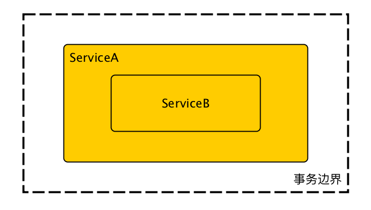
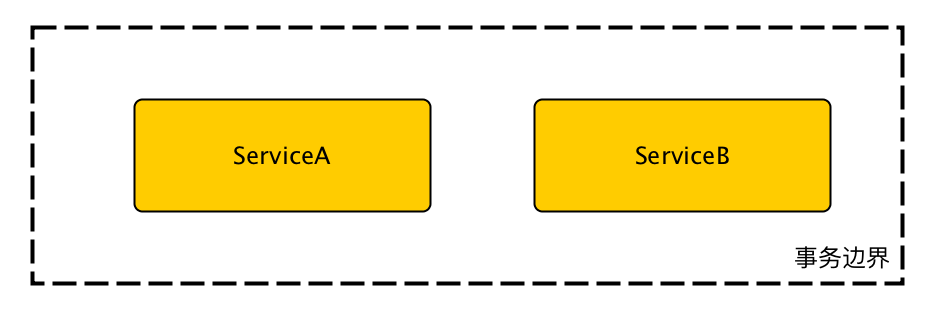

<!DOCTYPE HTML>
<html>
<head><meta name="generator" content="Hexo 3.9.0">
  <meta charset="utf-8">
  <meta http-equiv="X-UA-Compatible" content="IE=edge">
  <meta name="apple-mobile-web-app-capable" content="yes">
  <meta name="apple-mobile-web-app-status-bar-style" content="black">
  <meta name="google-site-verification" content>
  
  <title>【Spring】单应用多数据库的事务管理</title>
  <meta name="author" content="Emac">
   <meta name="description" content="单应用多数据库的事务管理上篇讲到单应用多数据库的配置，这次我们聊聊单应用多数据库的事务管理。首先我们来了解一下事务。
什么是数据库事务？
数据库事务(Database Transaction) ，是指作为单个逻辑工作单元执行的一系列操作，要么完全地执行，要么完全地不执行。事务处理可以确保除非事务性单">
  

  <meta property="og:title" content="【Spring】单应用多数据库的事务管理">
  <meta name="viewport" content="width=device-width, initial-scale=1, maximum-scale=1">
  <meta property="og:site_name" content="Emac">
 <meta property="og:image" content="undefined">
  
  <link href="/apple-touch-icon-precomposed.png" sizes="180x180" rel="apple-touch-icon-precomposed">
  <link rel="alternate" href="/atom.xml" title="Emac" type="application/atom+xml">
  <link rel="stylesheet" href="//cdn.bootcss.com/bootstrap/3.3.6/css/bootstrap.min.css">
  <link rel="stylesheet" href="//cdn.bootcss.com/font-awesome/4.5.0/css/font-awesome.min.css">
  <link rel="stylesheet" href="/css/m.min.css">
  <link rel="icon" type="image/x-icon" href="/favicon.ico">
</head>
</html>
<body>
  <div id='wx_pic' style='display:none;'></div>
  <div id="main">
    <div class="behind">
      <div class="back">
        <a href="/" class="black-color"><i class="fa fa-times" aria-hidden="true"></i></a>
      </div>
      <div class="description">
        &nbsp;拾贝
      </div>
    </div>
    <div class="container">
      

  <article class="standard post">
    <div class="title">
      
  
    <h1 class="page-title center">
        【Spring】单应用多数据库的事务管理
    </h1>
  


    </div>
    <div class="meta center">
      
<time datetime="2016-03-26T16:00:00.000Z">
  <i class="fa fa-calendar"></i>&nbsp;
  2016-03-27
</time>


    
    &nbsp;
    <i class="fa fa-tag"></i>&nbsp;
    <a href="/categories/backend/">backend</a>


    
    &nbsp;
    <i class="fa fa-tag"></i>&nbsp;
    <a href="/tags/原创/">原创</a>·<a href="/tags/Spring/">Spring</a>


    </div>
    <hr>
    <div class="picture-container">
      
    </div>
    <h2 id="单应用多数据库的事务管理"><a href="#单应用多数据库的事务管理" class="headerlink" title="单应用多数据库的事务管理"></a>单应用多数据库的事务管理</h2><p><a href="http://emacoo.cn/backend/spring-boot-multi-db">上篇</a>讲到单应用多数据库的配置，这次我们聊聊单应用多数据库的事务管理。首先我们来了解一下事务。</p>
<h2 id="什么是数据库事务？"><a href="#什么是数据库事务？" class="headerlink" title="什么是数据库事务？"></a>什么是数据库事务？</h2><blockquote>
<p>数据库事务(Database Transaction) ，是指作为单个逻辑工作单元执行的一系列操作，要么完全地执行，要么完全地不执行。事务处理可以确保除非事务性单元内的所有操作都成功完成，否则不会永久更新面向数据的资源。一个逻辑工作单元要成为事务，必须满足所谓的ACID（原子性、一致性、隔离性和持久性）属性。<br><a href="http://baike.baidu.com/view/1298364.htm" target="_blank" rel="noopener">http://baike.baidu.com/view/1298364.htm</a></p>
</blockquote>
<p>举个栗子，银行的一次转账操作就可以理解成一个事务，A打钱给B，银行首先从A的账户里扣钱，然后把钱转到B的账户。如果只执行前一步，A肯定不乐意，如果是后一步，换银行不乐意。所以两步要么都执行，要么都不执行。</p>
<h2 id="单库事务和跨库事务有什么区别？"><a href="#单库事务和跨库事务有什么区别？" class="headerlink" title="单库事务和跨库事务有什么区别？"></a>单库事务和跨库事务有什么区别？</h2><p>一般而言，所谓的数据库事务都是针对单个数据库的事务，即单库事务。而跨库事务，顾名思义，是指涉及多个数据库的事务，理论上也必须满足ACID属性。两者最核心的区别在于，单库事务一般是由数据库保证的，俗称物理事务，而跨库事务一般是由应用保证的，俗称逻辑事务。与单库事务相比，跨库事务执行成本高，稳定性差，管理也更复杂，但在某些场景下，尤其是分布式应用环境下，又是不得不使用的技术。</p>
<p>再举个栗子，单库事务好比你从北京飞上海，到东航官网买张票就搞定了，而跨库事务好比北京飞纽约，到上海转机，就得买东航转上航的联票，出票就转由携程保证了。</p>
<h2 id="多数据库下的三种事务使用场景"><a href="#多数据库下的三种事务使用场景" class="headerlink" title="多数据库下的三种事务使用场景"></a>多数据库下的三种事务使用场景</h2><p>了解了单库事务和跨库事务之后，我们再来看看多数据库下的三种事务使用场景。假设有DB1，DB2两个数据库，分别对应ServiceA和ServiceB两个带上事务注解的服务类，根据调用关系，可细分为三种场景。</p>
<h3 id="场景一：仅调用ServiceA，ServiceA不调用ServiceB"><a href="#场景一：仅调用ServiceA，ServiceA不调用ServiceB" class="headerlink" title="场景一：仅调用ServiceA，ServiceA不调用ServiceB"></a>场景一：仅调用ServiceA，ServiceA不调用ServiceB</h3><p>这种情况等同于单库事务，无需特殊处理。</p>
<h3 id="场景二：仅调用ServiceA，ServiceA再调用ServiceB"><a href="#场景二：仅调用ServiceA，ServiceA再调用ServiceB" class="headerlink" title="场景二：仅调用ServiceA，ServiceA再调用ServiceB"></a>场景二：仅调用ServiceA，ServiceA再调用ServiceB</h3><p></p>
<h3 id="场景三：先调用ServiceA，再调用ServiceB"><a href="#场景三：先调用ServiceA，再调用ServiceB" class="headerlink" title="场景三：先调用ServiceA，再调用ServiceB"></a>场景三：先调用ServiceA，再调用ServiceB</h3><p></p>
<p>场景二和场景三是两种典型的跨库事务，Spring默认的事务管理并无法保证事务的属性。对于场景二，在调用ServiceB之后，如果ServiceA出错，ServiceB并不会回滚。而对于场景三，在调用ServiceB之前，ServiceA的事务已经完成，因此当ServiceB出错回滚时，ServiceA并不会同步回滚。</p>
<p>如何解决？前面说过，跨库事务一般是由应用保证，因此办法有很多。标准的方法是使用JTA框架进行两段式提交，比如开源的<a href="https://www.atomikos.com/Main/WebHome" target="_blank" rel="noopener">Atomikos</a>，<a href="https://github.com/bitronix/btm" target="_blank" rel="noopener">Bitronix</a>。粗暴一点，可以显式创建两个事务，将所有的服务调用包在其中。考虑到本文单应用的环境，还有第三种方式，根据所涉及的事务列表，动态构造调用链，把所有的服务调用封装到最内层，由外层的事务注解链保证跨库事务。</p>
<p>定义事务代理类，每一个类代理一个数据库事务：</p>
<pre><code>@Component
public class Db1TxBroker {
    @Transactional(DbConstants.TX_DB1)
    public &lt;V&gt; V inAccount(Callable&lt;V&gt; callable) {
        try {
            return callable.call();
        } catch (Exception e) {
            throw new ServiceException(e);
        }
    }
}
</code></pre><p>负责生成调用链的服务基类：</p>
<pre><code>public abstract class BaseComboService {

    @Autowired
    private Db1TxBroker db1TxBroker;

    @Autowired
    private Db2TxBroker db2TxBroker;

    /**
     * 根据传入的事务链构造调用链,在最内层调用包含业务逻辑的callable.
     *
     * @param callable
     * @param txes 所涉及的完整事务列表(顺序无关)
     */
    protected &lt;V&gt; V combine(Callable&lt;V&gt; callable, TX... txes) {
        if (callable == null) {
            return null;
        }

        Callable&lt;V&gt; combined = Stream.of(txes).filter(Objects::nonNull).distinct().reduce(callable, (r, tx) -&gt; {
            switch (tx) {
                case DB1:
                    return () -&gt; db1TxBroker.inDb1(r);
                case DB2:
                    return () -&gt; db2TxBroker.inDb2(r);
                default:
                    // should not happen
                    return null;
            }
        }, (r1, r2) -&gt; r2);
        try {
            return combined.call();
        } catch (Exception e) {
            throw new ServiceException(e);
        }
    }
}
</code></pre><p>使用示例：</p>
<pre><code>@Service
public class DemoComboService extends BaseComboService {

    @Autowired
    private ServiceA serviceA;

    @Autowired
    private ServiceB serviceB;

    public void demo() {
        combine(() -&gt; {
            serviceA.flyToShanghai();
            serviceB.flyToNewYork();
            return null;
        }, TX.DB1, TX.DB2);
    }
}
</code></pre><p>相比JTA，上述第三种方法最大的优点是更轻量，配置更简单，但只能工作在单个应用的环境。对于分布式应用，后者就无能为力了。这种方法本质上还是借助Spring的事务注解来保证跨库事务，如果将来Spring的事务注解支持JDK8的@Repeatable特性，那就可以直接在方法上加上多个事务注解来达到同样目的。</p>
<h2 id="参考"><a href="#参考" class="headerlink" title="参考"></a>参考</h2><ul>
<li><a href="https://spring.io/blog/2011/08/15/configuring-spring-and-jta-without-full-java-ee/" target="_blank" rel="noopener">Configuring Spring and JTA without full Java EE</a></li>
<li><a href="http://jinnianshilongnian.iteye.com/blog/1441271" target="_blank" rel="noopener">Spring的事务之编程式事务</a></li>
</ul>


  </article>
  </script>
    <script async src="https://dn-lbstatics.qbox.me/busuanzi/2.3/busuanzi.pure.mini.js">
  </script>
  <div class="busuanzi center">
    页阅读量:&nbsp;<span id="busuanzi_value_page_pv"></span>&nbsp;・&nbsp;
    站访问量:&nbsp;<span id="busuanzi_value_site_pv"></span>&nbsp;・&nbsp;
    站访客数:&nbsp;<span id="busuanzi_value_site_uv"></span>
  </div>


    </div>
  </div>
  <footer class="page-footer"><div class="clearfix">
</div>
<div class="right-foot container">
    <div class="firstrow">
        <a href="#top" >
        <i class="fa fa-arrow-right"></i>
        </a>
        © emacoo.cn 2015-2020
    </div>
    <div class="secondrow">
        <a href="https://github.com/gaoryrt/hexo-theme-pln">
        
        </a>
    </div>
</div>
<div class="clearfix">
</div>
</footer>
  <script src="//cdn.bootcss.com/jquery/2.2.1/jquery.min.js"></script>
<script src="/js/search.js"></script>
<script type="text/javascript">

// comments below to disable loading animation
function revealOnScroll() {
  var scrolled = $(window).scrollTop();
  $(".excerpt, .index-title, .index-meta, p").each(function() {
    var current = $(this),
      height = $(window).outerHeight(),
      offsetTop = current.offset().top;
    (scrolled + height + 50 > offsetTop) ? current.addClass("animation"):'';
  });
}
$(window).on("scroll", revealOnScroll);
$(document).ready(revealOnScroll)

// disqus scripts


// dropdown scripts
$(".dropdown").click(function(event) {
  var current = $(this);
  event.stopPropagation();
  $(current).children(".dropdown-content")[($(current).children(".dropdown-content").hasClass("open"))?'removeClass':'addClass']("open")
});
$(document).click(function(){
    $(".dropdown-content").removeClass("open");
})

// back to top scripts
$("a[href='#top']").click(function() {
  $("html, body").animate({ scrollTop: 0 }, 500);
  return false;
});


var path = "/search.xml";
searchFunc(path, 'local-search-input', 'local-search-result');

</script>

</body>
</html>
